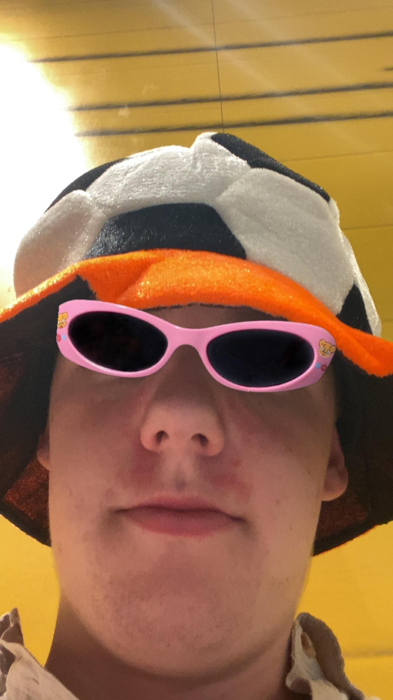
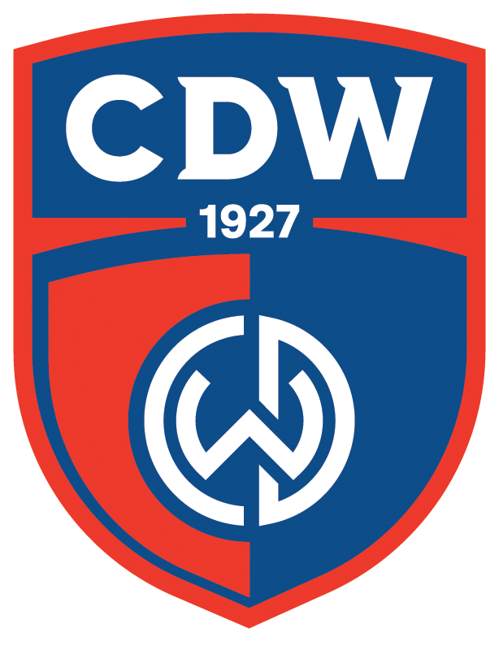
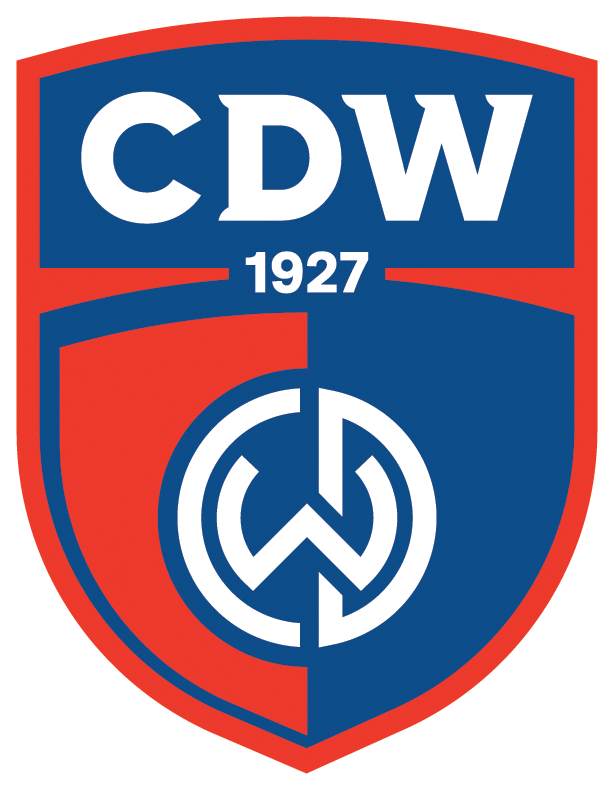
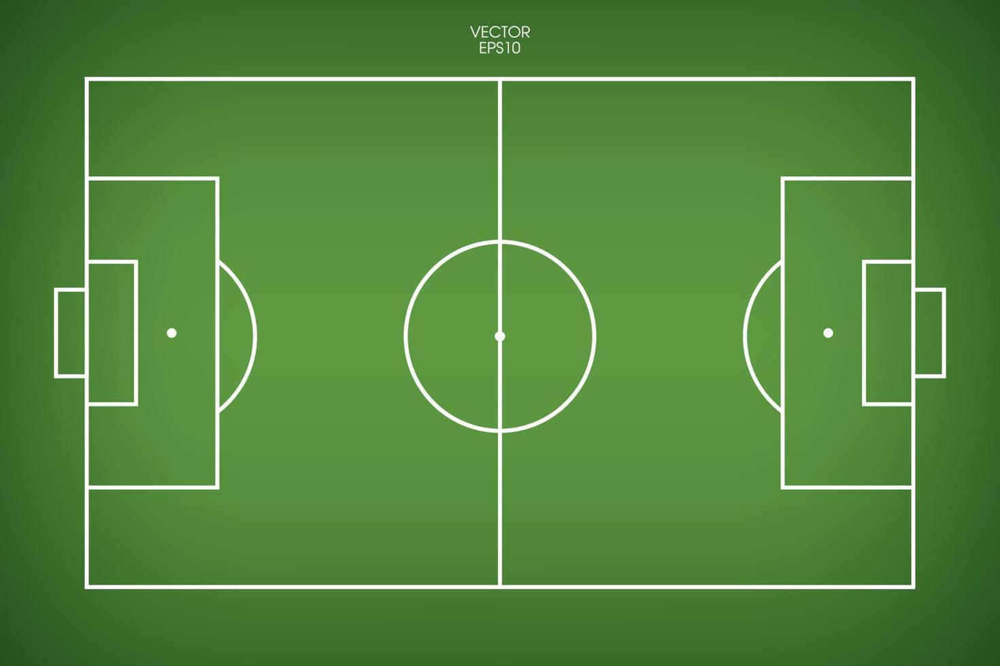
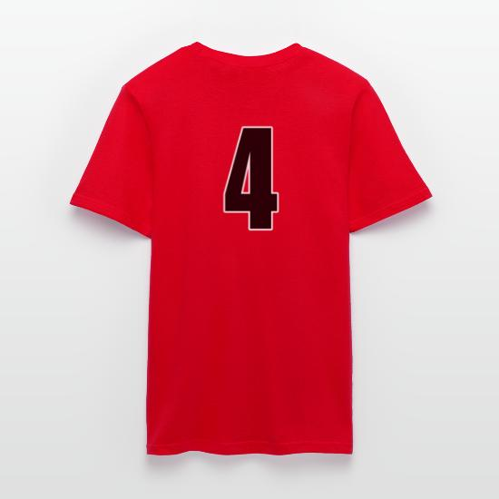
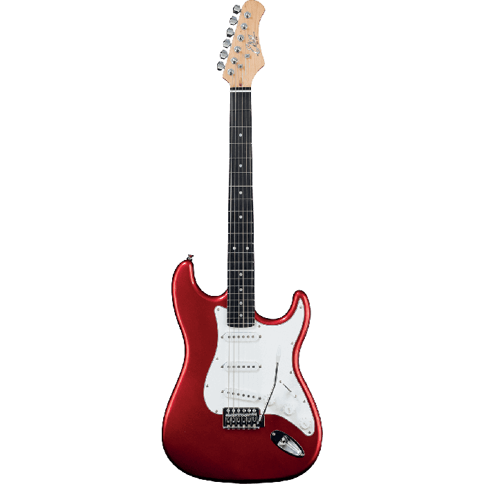

- 
 Wijk bij Duurstede
Wijk bij Duurstede- 10-02-2005
 
- 
- Gitaar
- Leergierig en ijverig
- Snel afgeleid
Over mij
Mocht het nog niet opgevallen zijn. Mijn naam is Luc Hoogerwerf. Ik ben 19 jaar oud en kom
uit een klein dorpje onder Utrecht: Wijk bij Duurstede. Daar over later meer.
In mijn vrije tijd
speel ik graag gitaar.
Ik speel zowel klassieke (spaanse) gitaar, western gitaar, elektrische gitaar en basgitaar. Eigenlijk
speel ik alles met snaren er op.
Ook speel ik graag voetbal. Ik speel bij CDW, een kleine club in
mijn
dorp.
Daarnaast ben ik bijna elke zondag wel te vinden op de bunnikside bij FC Utrecht. Maar die club kan hier
in
Amsterdam wat gevoelig liggen.
Wijk bij Duurstede
Wijk bij Duurtede is het dorp waar ik vandaan kom. Het ligt vlak onder Utrecht en is door middel van een
provinciale weg verbonden met aanliggende dorpen:
Cothen, Langbroek en Werkhoven. Wijk bij Duurstede is te zien als een soort Utrecht met een paar boeren
tussendoor.
Ik vind het een prettige plek om te wonen omdat het er lekker rustig is en omdat bijna iedereen
elkaar kent.
Echter is het wel vervelend dat de verbinding met het ov erg slecht is. De bus naar Utrecht centraal duurt al 50
minuten!